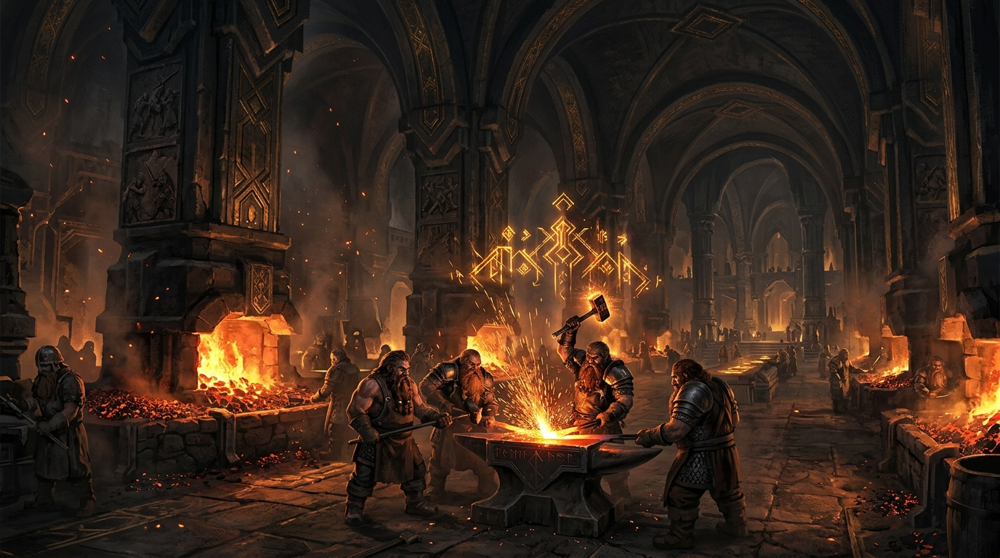
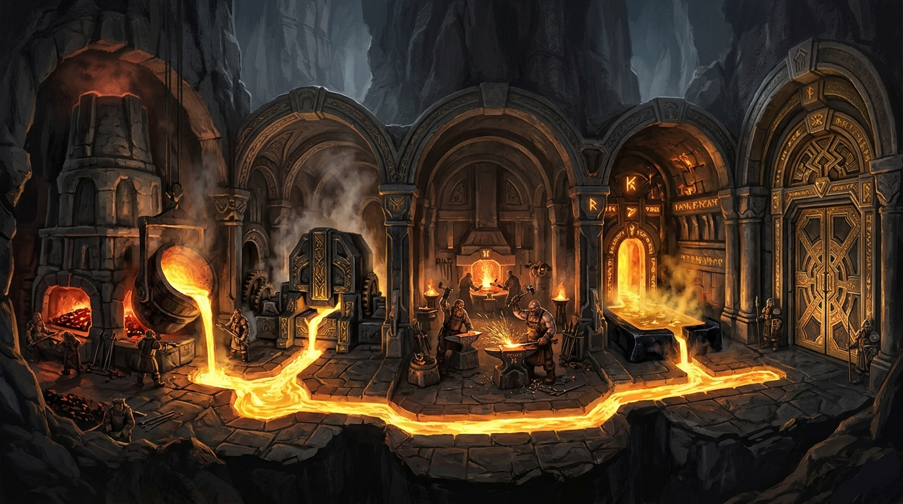
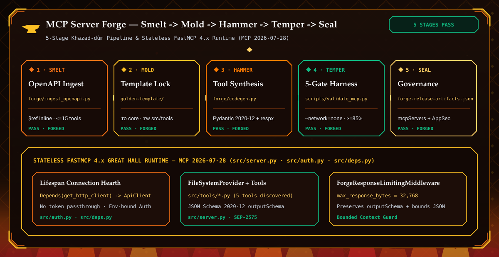
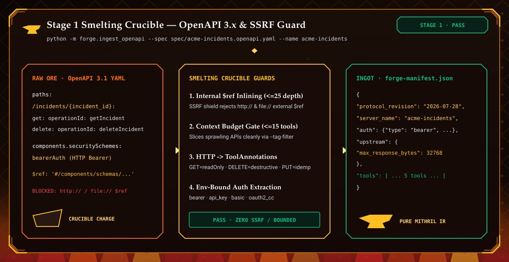
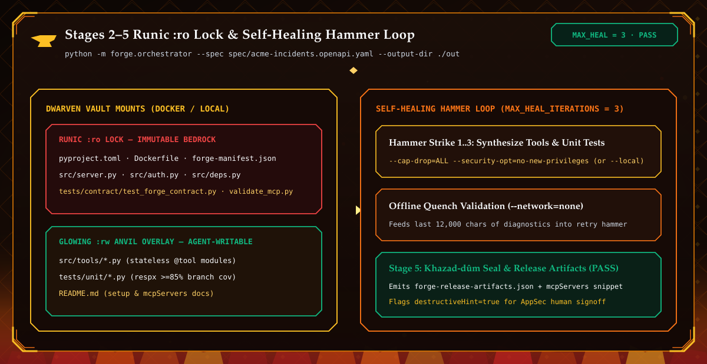
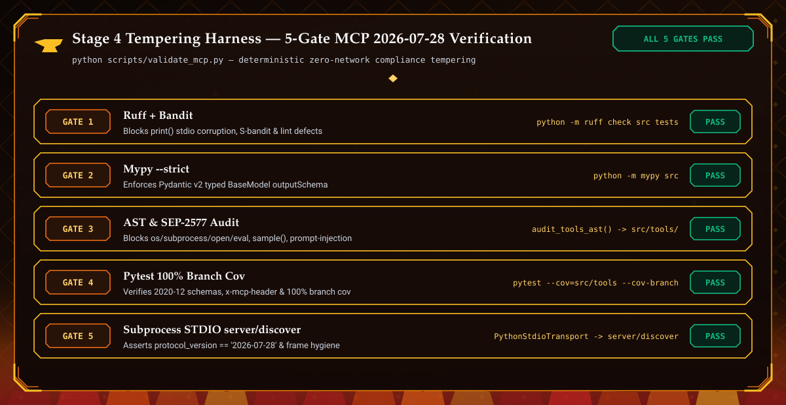

The Great Forge Hall
Immutable runtime infrastructure locked in stone (:ro) while stateless domain tools are hammered and tempered inside isolated writable overlays (:rw).
Forged in the deep halls: compile OpenAPI 3.x specifications into hardened, stateless
FastMCP 4.x servers targeting Model Context Protocol 2026-07-28
with locked Golden Templates and a 5-gate offline verification harness.

Immutable runtime infrastructure locked in stone (:ro) while stateless domain tools are hammered and tempered inside isolated writable overlays (:rw).

Smelt (OpenAPI Ingest) → Mold (Golden Template) → Hammer (Code Synthesis) → Temper (5-Gate Validator) → Seal (AppSec Release Governance).

End-to-end data flow across forge/, golden-template/, src/server.py, and ForgeResponseLimitingMiddleware.

Inlines local #/components/... pointers, blocks external URIs, enforces <= 15 tools, and maps HTTP verbs to ToolAnnotations.

Privilege-dropped container or deterministic --local synthesizer with up to 3 automated diagnostic repair iterations.

Ruff + Bandit, mypy --strict, AST SEP-2577 audit, pytest >= 85% branch coverage, and subprocess stdio server/discover.
git clone https://github.com/bsommers/forge.git && cd forge
uv sync
.venv/bin/python scripts/validate_mcp.py
# Forge a verified MCP 2026-07-28 server locally without Docker:
.venv/bin/python -m forge.orchestrator \
--spec spec/acme-incidents.openapi.yaml \
--name acme-incidents \
--output-dir /tmp/forged-acme \
--localComplete directory map & reading order.
Problem statement, security boundaries, goals & trade-offs.
Subsystems, Mermaid sequence/state/ER diagrams & ADRs.
Setup, --tag-filter slicing, custom tools & Docker deploy.
Executive showcase, personas & value pillars.
Bootstrap, forging, tool authoring, CLI reference & FAQ.